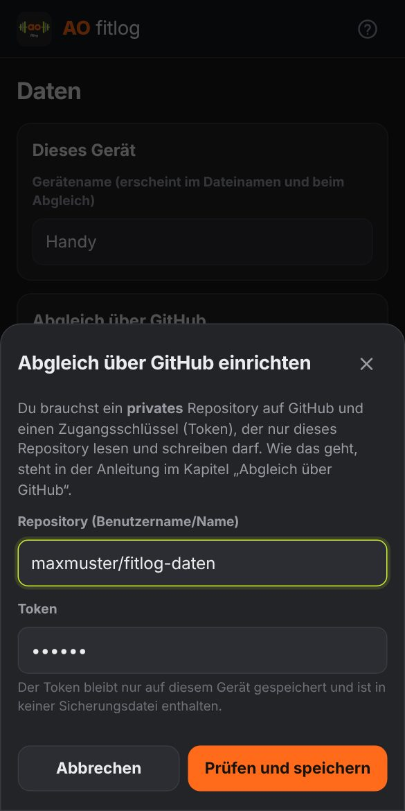
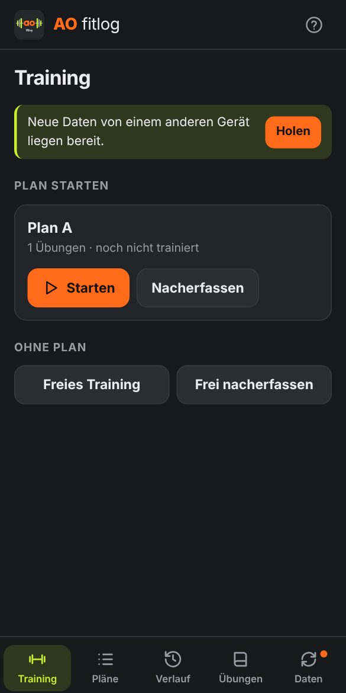
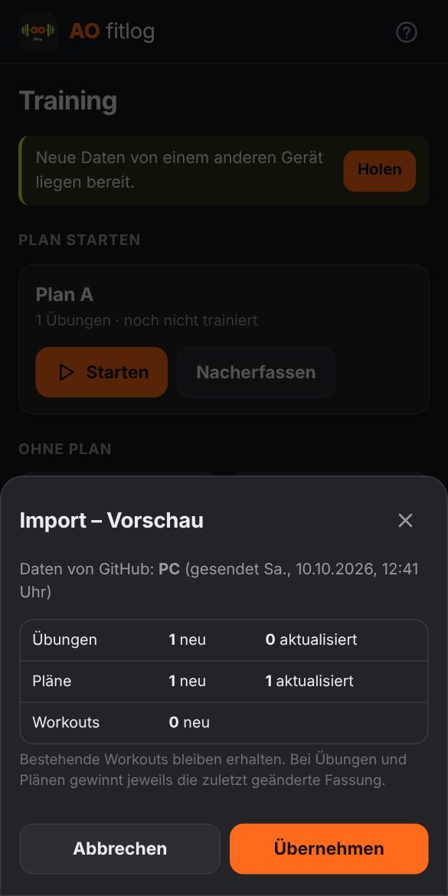
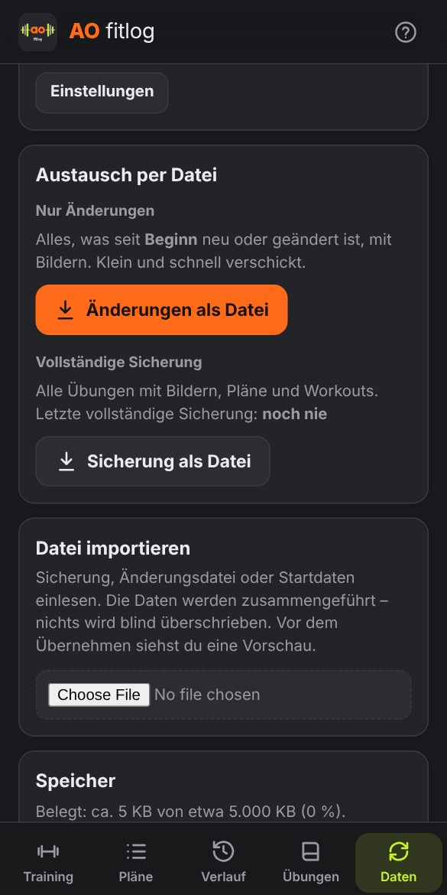

AO fitlog – Benutzerleitfaden
Trainingstagebuch für stetige Steigerung in kleinen Schritten · Version 1.1
1Überblick: die fitlog-Welt
AO fitlog ist eine App, die im Browser läuft und sich wie eine normale App auf Handy und PC installieren lässt. Es gibt kein Benutzerkonto bei AO fitlog und keinen eigenen Server. Deine Daten liegen auf deinen Geräten. Jedes Gerät hat seinen eigenen Datenbestand. Damit Handy und PC denselben Stand haben, werden sie abgeglichen (Kapitel 10).
Wer macht was
| Gerät | Typische Aufgaben |
|---|---|
| Handy | Im Studio das Training erfassen. Danach die Daten an den PC übertragen. |
| PC | Übungen anlegen (mit Bildern), Pläne zusammenstellen und ändern, Verlauf in Ruhe ansehen. Danach die Änderungen ans Handy übertragen. |
Die Bausteine
| Baustein | Wozu |
|---|---|
| Die App im Internet, Adresse in Kapitel 2 | Das eigentliche Programm. Einmal installieren, danach funktioniert es auch ohne Internet, z. B. im Studio. |
| Diese Anleitung | In der App jederzeit über das ? oben rechts erreichbar. |
AO_fitlog_Startdaten.json | Fertige Übungen mit Bildern und ein Beispielplan zum Einstieg (Kapitel 2.4). |
AO_fitlog_Uebungen_Vorlage.xlsx | Leere Excel-Vorlage, um viele Übungen auf einmal anzulegen (Kapitel 5). |
AO_fitlog_Uebungskatalog.xlsx und Ordner Übungsbilder | Große Sammlung von rund 850 Übungen aus Fachbüchern, mit Beschreibung und Bild. Ein Vorrat zum Aussuchen, nicht alles muss in die App (Kapitel 5.2). |
| Privates GitHub-Repository optional, empfohlen | Deine persönliche Ablage im Internet für den bequemen Abgleich zwischen Handy und PC (Kapitel 11). |
Sicherungs- und ÄnderungsdateienAO_fitlog_….json / .txt | Von der App erzeugte Dateien zum Sichern und zum Übertragen ohne GitHub (Kapitel 12). |
2App aufs Gerät bringen
Die App hat diese Adresse:
Die Installation ist kostenlos und dauert eine Minute. Es ist kein App-Store nötig.
2.1 Android-Handy
- Die Adresse in Chrome öffnen.
- Oben rechts das Menü ⋮ › App installieren (bei manchen Handys Zum Startbildschirm hinzufügen) › bestätigen.
- Auf dem Startbildschirm erscheint das AO-fitlog-Symbol. Künftig nur noch darüber starten. Die App öffnet sich dann ohne Browserleiste.
2.2 iPhone
- Die Adresse in Safari öffnen.
- Unten das Teilen-Symbol (Quadrat mit Pfeil nach oben) › Zum Home-Bildschirm › Hinzufügen.
- Künftig nur noch über das Symbol auf dem Home-Bildschirm starten. Das Symbol hat einen eigenen Datenbestand, getrennt von Safari.
2.3 PC (Windows oder Mac)
- Die Adresse in Chrome oder Edge öffnen.
- Empfohlen: In der Adresszeile rechts auf das Installieren-Symbol (Bildschirm mit Pfeil) klicken › Installieren. Die App bekommt dann ein eigenes Fenster und ein Symbol im Startmenü.
2.4 Erster Start (auf jedem Gerät)
- Unten bzw. links auf Daten tippen und einen Gerätenamen eintragen, z. B.
HandyoderPC. Er erscheint später beim Abgleich und in Dateinamen. - Startbestand wählen:
- Erstes Gerät: Daten › Datei importieren ›
AO_fitlog_Startdaten.jsonwählen › Vorschau prüfen › Übernehmen. Oder ganz leer beginnen und eigene Übungen anlegen. - Zweites Gerät: Nichts importieren, sondern den Abgleich einrichten (Kapitel 11) und Holen tippen. Ohne GitHub stattdessen eine Sicherungsdatei vom ersten Gerät importieren (Kapitel 12).
- Erstes Gerät: Daten › Datei importieren ›
- Unter Übungen bei den Übungen Typ, „Je Seite“ und „Zählt zum Score“ prüfen. Der Typ lässt sich nur ändern, solange die Übung noch nie trainiert wurde.
3Begriffe
| Begriff | Bedeutung |
|---|---|
| Übung | Eintrag in der Übungsliste mit Name, Typ, Bild, Technik und Einstellungen. |
| Typ | Gewicht (kg × Wiederholungen), Körpergewicht (nur Wiederholungen) oder Zeit (Sekunden). |
| Plan | Feste Abfolge von Übungen mit Satzzahl und Zielwerten. |
| Workout | Ein durchgeführtes Training. Es wird im Verlauf gespeichert. |
| Satz | Eine Zeile im Training. Er zählt erst, wenn er abgehakt ist. |
| Je Seite | Einseitige Übung. Die Werte gelten pro Seite. |
| Ohne Wertung | Übung zählt nicht zum Score, z. B. Mobilisation. Sie wird trotzdem protokolliert. |
| Index | Leistung im Vergleich zum ersten Training der Übung (= 100). |
| Trend | Veränderung in Prozent gegenüber dem letzten Training der Übung. |
| Vorschlag | Empfohlener kleiner Steigerungsschritt fürs heutige Training. |
| Abgleich | Handy und PC auf denselben Stand bringen: Senden auf dem einen, Holen auf dem anderen Gerät. |
| Repository | Ein Ablageordner auf GitHub. Für AO fitlog ein privater, also nur für dich sichtbarer. |
| Token | Ein langer Zugangsschlüssel, mit dem die App in dein Repository schreiben darf. Er ersetzt dein GitHub-Passwort und darf nur dieses eine Repository nutzen. |
4Übungen anlegen (PC)
Übungen › + Neue Übung. Zum Bearbeiten eine Übung in der Liste anklicken.

| Feld | Bedeutung |
|---|---|
| Name | Pflicht. Jeder Name darf nur einmal vorkommen. |
| Typ | Gewicht, Körpergewicht oder Zeit. Nach dem ersten Training fest, damit die Auswertung stimmt. |
| Steigerung | Größe eines Vorschlagsschritts. Standard: 0,5 kg · 1 Wdh · 5 s. Bei Kurzhanteln mit festen Stufen (z. B. 12 → 14 kg) hier 2 eintragen. |
| Wdh-Bereich von / bis | Nur Typ Gewicht. Standard 8 bis 12. Siehe Kapitel 8. |
| Je Seite | Für einseitige Übungen anhaken. |
| Zählt zum Score | Für Mobilisation und Technikübungen abhaken. Dann gibt es auch keinen Steigerungsvorschlag. |
| Bild | Strg+V fügt ein kopiertes Bild ein (z. B. einen Bildschirmausschnitt). Alternativ: Datei hineinziehen oder Datei wählen. Bilder werden automatisch verkleinert. |
| Beschreibung / Technik | Im Training unter „Technik & Bild“ aufklappbar. Eine Leerzeile beginnt einen neuen Absatz. |
| Kommentar / Einstellung | Im Training immer sichtbar, z. B. „Sitzhöhe 3“. |
| Link | Optional, z. B. Video. Muss mit https:// beginnen. |
Löschen: Papierkorb im Bearbeiten-Fenster. Das geht nur, wenn die Übung in keinem Plan steht. Danach erscheint einige Sekunden lang Rückgängig.
5Viele Übungen importieren (PC)
Statt jede Übung einzeln anzulegen, lassen sich viele Übungen aus einer Excel-Liste einlesen. Die App liest dafür eine CSV-Datei, die Excel aus der Liste erzeugt.
5.1 Eigene Liste mit der Vorlage
AO_fitlog_Uebungen_Vorlage.xlsxöffnen. Im Blatt „Übungen“ eine Zeile pro Übung ausfüllen. Das Blatt „Erklärung“ beschreibt jede Spalte.- Datei › Speichern unter › Dateityp CSV UTF-8 (durch Trennzeichen getrennt). Den Hinweis von Excel mit Ja bestätigen.
- Die Bilder in denselben Ordner wie die CSV-Datei legen.
- App › Übungen › Import › im Dateidialog Strg+A (CSV und Bilder gemeinsam markieren) › Öffnen.
- Vorschau prüfen › … Übungen importieren.
| Spalte „Bild“ | Ergebnis |
|---|---|
Dateiname, z. B. goblet.jpg | Genau diese Datei wird verwendet. |
| leer | Es wird eine Datei gesucht, die genauso heißt wie die Übung (z. B. Goblet Squat.jpg). Gibt es keine, bleibt die Übung ohne Bild. |
5.2 Übungen aus dem Übungskatalog übernehmen
AO_fitlog_Uebungskatalog.xlsx ist eine Sammlung von rund 850 Übungen aus mehreren Fachbüchern. Jede Zeile enthält Name, Typ, eine Beschreibung (Ausgangsposition, Ausführung, worauf zu achten ist, Quelle), benötigte Hilfsmittel und den Namen des passenden Bildes. Die Bilder liegen im Ordner Übungsbilder. Die Spalten A bis K entsprechen genau der Vorlage, die Spalten danach (Vorschau, Herkunft, App-ID, Erstellt, Geändert) dienen nur der Übersicht und werden beim Import ignoriert.
- Im Katalog die gewünschten Übungen aussuchen, z. B. mit dem Excel-Filter. Die Spalte App-ID ist bei Übungen gefüllt, die schon in der App sind.
- Die ausgewählten Zeilen samt Kopfzeile in ein neues, leeres Excel-Blatt kopieren und dieses wie in 5.1 als CSV UTF-8 in einen neuen Ordner speichern.
- Die zugehörigen Bilder (Dateiname steht in der Spalte „Bild“) aus
Übungsbilderin diesen Ordner kopieren. - Wie in 5.1 ab Schritt 4 importieren.
6Pläne anlegen (PC)
- Pläne › + Neuer Plan › Name eingeben.
- Über + Übung hinzufügen … Übungen auswählen.
- Je Übung Sätze, Wdh/Sekunden und bei Gewichtsübungen kg eintragen.
- Reihenfolge mit den Pfeilen oder per Ziehen am Griff ⠿ ändern › Speichern.
Sperre und neue Version
Sobald mit einem Plan trainiert wurde, ist seine Struktur gesperrt. So bleiben alle Workouts eines Plans vergleichbar.
| Weiter änderbar | Gesperrt |
|---|---|
| Name, Reihenfolge, Zielwerte | Übungen hinzufügen/entfernen, Satzzahl |
Für strukturelle Änderungen: Plan bearbeiten › Als neue Version anlegen. Die App legt eine Kopie an (z. B. „vitago 1 V2“) und verschiebt die alte Version ins Archiv. Archivierte Pläne erscheinen nicht mehr beim Trainingsstart, ihre Workouts bleiben erhalten. Über Archiv › Wiederherstellen lassen sie sich zurückholen.

Kopieren erstellt eine ungesperrte Kopie, ohne das Original zu archivieren. Löschen gibt es nur für Pläne ohne Workouts, sonst Archivieren.
Danach: Neue oder geänderte Pläne zum Handy übertragen (Kapitel 10).
7Trainieren (Handy)


7.1 Starten
Vorher, solange noch Internet da ist: Zeigt die Trainingsseite „Neue Daten von einem anderen Gerät liegen bereit“, zuerst Holen tippen. Dann Training › beim gewünschten Plan Starten. Das Display bleibt während des Trainings an. Während des Trainings braucht die App kein Internet.
7.2 Bedienung
| Element | Funktion |
|---|---|
| − + | Gewicht ±0,5 kg · Wiederholungen ±1 · Zeit ± Steigerungsschritt (Standard 5 s). Werte lassen sich auch antippen und eintippen (Komma erlaubt). |
| ✓ | Satz erledigt. Nur abgehakte Sätze zählen. Nochmal tippen hebt das Abhaken auf. |
| „zuletzt …“ | Wert vom letzten Training. Nach dem Abhaken: ▲ mehr, = gleich oder ▼ weniger. |
| Vorschlag › Übernehmen | Setzt den empfohlenen kleinen Steigerungsschritt. Ignorieren ist jederzeit möglich. |
| Orange Notiz | Deine Notiz vom letzten Training dieser Übung. |
| Grauer Kasten | Kommentar/Einstellung der Übung, z. B. Sitzhöhe. |
| Technik & Bild | Aufklappen für Beschreibung, Bild und Link. Bild antippen vergrößert es. |
| + Satz / − Satz | Satz für heute ergänzen oder entfernen. Der Plan bleibt unverändert. |
| Wie war's? | leicht · passt · schwer (optional). „Schwer“ verhindert beim nächsten Mal einen Steigerungsvorschlag. |
| Notiz fürs nächste Mal | Erscheint beim nächsten Training dieser Übung, z. B. „Gerät belegt“. |
| Überspringen | Übung heute auslassen. Sie wird nicht als Rückschritt gewertet. |
| + Übung hinzufügen | Weitere Übung für heute aus der Liste ergänzen. |
Fokus: Aufgeklappt ist nur die aktuelle Übung. Ist sie vollständig abgehakt, klappt sie zu und die nächste öffnet sich. Jede Übung lässt sich per Tipp auf den Titel auf- und zuklappen.
7.3 Beenden
- Abschließen speichert das Workout und zeigt die Auswertung. Ist der Abgleich eingerichtet, steht dort direkt Senden bereit. Ein Tipp darauf, und der PC kann das Workout holen.
- Abbrechen verwirft das Workout.
- Wird die App zwischendurch geschlossen, bleibt das laufende Workout erhalten.
7.4 Nacherfassen und freies Training
- Nacherfassen (beim Plan): für ein Training, das nicht live erfasst wurde. Datum, Beginn und Dauer eintragen, Werte anpassen, Alle Sätze abhaken › Speichern.
- Freies Training: ohne Plan, mit Titel und Notizen (z. B. Joggen). Übungen über + Übung hinzufügen ergänzen.
8Steigerungsvorschläge
Grundsatz: Pro Übung und Training höchstens ein kleiner Schritt, und nur in einem Satz. Es wird immer der schwächste Satz angehoben.
| Typ | Vorschlag | Beispiel |
|---|---|---|
| Zeit | Ein Satz + Schritt (Standard 5 s) | 30/30/30 → 35/30/30 → 35/35/30 |
| Körpergewicht | Ein Satz +1 Wdh | 10/10/10 → 11/10/10 |
| Gewicht | Ein Satz +1 Wdh, bis alle Sätze das obere Ende des Bereichs erreichen. Dann Gewicht + Schritt (Standard 0,5 kg), Wdh zurück auf das untere Ende. | 12 kg × 12/12/12 → 12,5 kg × 8/8/8 |
Kein Vorschlag, Werte halten, wenn beim letzten Mal nicht alle Sätze abgehakt wurden oder die Übung als „schwer“ markiert war. Übungen „ohne Wertung“ bekommen keine Vorschläge.
9Auswertung: Index, Trend, Bestleistung

Leistung einer Übung
| Typ | Wert pro Satz |
|---|---|
| Gewicht | kg × (1 + Wdh ÷ 30) „Belastungswert“: belohnt mehr Gewicht auch bei weniger Wdh |
| Körpergewicht | Wiederholungen |
| Zeit | Sekunden |
Leistung = Summe der abgehakten Sätze ÷ Anzahl der Sätze. Ein ausgelassener Satz senkt die Leistung, eine andere Satzzahl verzerrt sie nicht.
| Kennzahl | Bedeutung |
|---|---|
| Ø-Index | Durchschnitt aller gewerteten Übungen. 100 = Niveau beim ersten Training der jeweiligen Übung. 104,3 = im Schnitt 4,3 % besser als am Anfang. |
| Trend | Durchschnittliche Veränderung zum letzten Training jeder Übung (planübergreifend). Grün ▲ = gesteigert, Rot ▼ = weniger. |
| Bestleistung ★ | Leistung höher als in allen bisherigen Trainings dieser Übung. |
| Basis | Erstes Training einer Übung. Es gibt noch keinen Vergleich. |
Beispiel SkiErg (3 Sätze): 30/30/30 s ergibt 30. Mit 35/30/30 s ergibt sich 31,67, also +5,6 %.
Verlauf: Kalender (grün = Trainingstag), Anzahl pro Woche und Monat, Liste aller Workouts. Ein Tipp öffnet die Details. Dort lässt sich ein Workout auch löschen (mit Rückgängig).

10Geräte abgleichen
Handy und PC haben jeweils ihren eigenen Datenbestand. Was du auf dem einen Gerät tust, kennt das andere erst nach einem Abgleich. Es gibt zwei Wege. Beide übertragen alles, auch die Bilder, und beide führen die Daten auf dieselbe Weise zusammen.
| Abgleich über GitHub (Kapitel 11) | Austausch per Datei (Kapitel 12) | |
|---|---|---|
| Bedienung | Ein Tipp auf Senden, auf dem anderen Gerät ein Tipp auf Holen | Datei erzeugen, z. B. per Mail an dich selbst schicken, auf dem anderen Gerät importieren |
| Voraussetzung | Kostenloses GitHub-Konto, einmal einrichten (ca. 10 Minuten), Internet | Keine |
| Hinweis auf Neues | Die App meldet von selbst, wenn das andere Gerät gesendet hat | Nein |
| Empfohlen für | Den Alltag | Wer kein GitHub möchte, und als zusätzliche Sicherung |
Vor dem Training bzw. vor der Arbeit am PC holen, was das andere Gerät gesendet hat. Danach senden, was du geändert hast. Dann gibt es kein Durcheinander.
So werden Daten zusammengeführt
Beim Holen und beim Datei-Import wird nie blind überschrieben. Zuerst zeigt eine Vorschau, was neu ist und was sich ändert. Erst Übernehmen führt es aus.
- Workouts werden ergänzt, nie überschrieben.
- Übungen und Pläne: Es gewinnt die zuletzt geänderte Fassung. Bilder gehören zur Übung und kommen mit ihr.
- Löschungen werden übertragen: Auf einem Gerät gelöscht heißt nach dem Abgleich auch auf dem anderen gelöscht.
- Ein laufendes Workout wird nicht übertragen.
11Abgleich über GitHub
GitHub (github.com) ist ein großer Online-Dienst zum Ablegen von Dateien. Ein kostenloses Konto genügt. Du legst dort einen privaten Ablageordner (ein „Repository“) an, den nur du sehen kannst. Die App legt beim Senden die Daten dort ab und holt sie auf dem anderen Gerät wieder ab. Die Seiten von GitHub sind auf Englisch. Die Bezeichnungen unten sind deshalb genau so geschrieben, wie sie dort erscheinen.
11.1 Einmalig: Konto und privates Repository anlegen (am PC)
- github.com öffnen › Sign up › E-Mail-Adresse, Passwort und Benutzernamen wählen, die Bestätigungsmail beantworten. Wer schon ein Konto hat, meldet sich mit Sign in an.
- Oben rechts + › New repository.
- Bei Repository name
fitlog-dateneintragen. Darunter unbedingt Private wählen. Alles andere so lassen › Create repository. - Den vollständigen Namen notieren: Benutzername/fitlog-daten, z. B.
maxmuster/fitlog-daten. Er steht oben auf der Seite des Repositorys.
11.2 Einmalig: Token erzeugen (am PC)
Der Token ist der Schlüssel, mit dem die App in dein Repository schreiben darf. Er funktioniert nur für dieses eine Repository und kann jederzeit gelöscht werden.
- Oben rechts auf das eigene Profilbild › Settings.
- Links ganz unten Developer settings › Personal access tokens › Fine-grained tokens › Generate new token. Eventuell fragt GitHub noch einmal nach dem Passwort.
- Token name:
AO fitlog. Expiration (Ablauf): No expiration wählen. Wer lieber ein Ablaufdatum möchte, muss danach rechtzeitig einen neuen Token erzeugen. - Repository access: Only select repositories › im Auswahlfeld
fitlog-datenwählen. - Permissions: Bei den Repository-Berechtigungen den Eintrag Contents suchen und auf Read and write stellen. „Metadata: Read-only“ setzt GitHub dabei automatisch. Sonst nichts ändern.
- Ganz unten Generate token › bestätigen. Der Token beginnt mit
github_pat_. Mit dem Kopieren-Symbol daneben kopieren.
11.3 Auf jedem Gerät: Abgleich in der App einrichten

- Daten › prüfen, dass ein Gerätename eingetragen ist.
- Bei „Abgleich über GitHub“ Einrichten tippen.
- Repository:
Benutzername/fitlog-dateneintragen. Die komplette Adresse aus dem Browser geht auch. - Token: einfügen.
- Prüfen und speichern. Die App testet die Verbindung sofort und meldet, falls etwas nicht stimmt (Kapitel 15).
Token aufs Handy bringen: Am einfachsten über einen Passwort-Manager, den du auf beiden Geräten nutzt. Alternativ in einer Mail an dich selbst – diese Mail danach löschen.
Die allererste Übertragung: Auf dem Gerät, das schon Daten hat (meist der PC), Senden tippen. Beim ersten Mal werden alle Bilder hochgeladen, das kann je nach Menge eine bis mehrere Minuten dauern. Danach auf dem anderen Gerät Holen › Vorschau prüfen › Übernehmen.
11.4 Im Alltag



| Situation | Was tun |
|---|---|
| Handy, vor dem Training | Zeigt die Trainingsseite „Neue Daten … liegen bereit“: Holen › Übernehmen. Dann trainieren. |
| Handy, nach dem Training | In der Auswertung Senden tippen (oder später unter Daten › Senden). |
| PC, bevor du Übungen oder Pläne bearbeitest | Daten › Holen › Übernehmen. So sind die neuen Workouts vom Handy da. |
| PC, nach dem Bearbeiten | Daten › Senden. |
- Senden legt immer den kompletten aktuellen Stand dieses Geräts auf GitHub ab. Bilder werden nur hochgeladen, wenn sie neu sind oder sich geändert haben. Mehrmals senden schadet nicht.
- Holen lädt, was die anderen Geräte gesendet haben, zeigt eine Vorschau und ändert erst etwas, wenn du Übernehmen tippst. Bilder werden dabei nur für neue oder geänderte Übungen geladen. Zeigt die Vorschau „Nichts Neues“, ist das Gerät auf dem aktuellen Stand.
- Die App schaut beim Öffnen von selbst nach, ob ein anderes Gerät gesendet hat. Dann erscheint der grüne Hinweis auf der Trainingsseite und ein Punkt bei Daten.
- Während ein Workout läuft, ist Holen gesperrt. Erst abschließen, dann holen.
- Ohne Internet funktionieren Senden und Holen nicht. Alles andere geht weiter, und du holst das Senden später nach.
11.5 Was auf GitHub liegt
Im Repository legt die App zwei Ordner an: geraete mit einer Datei je Gerät (Übungen, Pläne, Workouts) und bilder mit den Übungsbildern. Bitte dort nichts von Hand ändern. Das Repository ist zugleich eine aktuelle Sicherung aller gesendeten Daten (Kapitel 13).
- Das Repository muss privat bleiben. Die App verweigert den Abgleich, wenn es öffentlich ist.
- Der Token wird nur auf dem jeweiligen Gerät gespeichert. Er ist in keiner Sicherungsdatei enthalten.
- Handy verloren? Auf GitHub unter Settings › Developer settings › Fine-grained tokens den Token löschen. Danach einen neuen erzeugen und am PC über Daten › Einstellungen eintragen.
- Einstellungen › Trennen entfernt den Abgleich von einem Gerät. Die Daten auf dem Gerät und auf GitHub bleiben erhalten.
12Austausch per Datei
Dieser Weg funktioniert immer, auch ohne GitHub. Die App erzeugt eine Datei, die du auf das andere Gerät bringst und dort importierst.

Zwei Arten von Dateien
| Art | Inhalt |
|---|---|
| Nur Änderungen | Alles, was seit der letzten Datei dieses Geräts neu oder geändert ist, mit Bildern. Klein, ideal für den Alltag. Der Zeitpunkt steht direkt über dem Knopf. |
| Vollständige Sicherung | Alle Übungen mit Bildern, alle Pläne und Workouts. |
Beide Arten werden auf dem anderen Gerät gleich importiert. Die Vorschau zeigt an, um welche Art es sich handelt.
Handy → PC (nach dem Training)
- Handy: Daten › Änderungen teilen … › z. B. per Mail an dich selbst oder in einen Cloud-Speicher.
- PC: Datei speichern › App › Daten › Datei importieren › Datei wählen › Übernehmen.
PC → Handy (nach Änderungen an Übungen oder Plänen)
- PC: Daten › Änderungen als Datei › Datei aufs Handy schicken (Mail, Cloud, Kabel).
- Handy: Daten › Datei importieren › Datei wählen › Übernehmen.
Dateinamen
Der Name enthält Gerät, Art, Datum und Uhrzeit, z. B. AO_fitlog_Handy_Aenderungen_2026-10-10_19-45.txt oder AO_fitlog_PC_2026-10-10_20-10.json. Beim Teilen endet die Datei auf .txt (Android erlaubt keine .json-Dateien zum Teilen), beim Speichern auf .json. Beide lassen sich importieren.
13Sichern und wiederherstellen
- Mit GitHub: Jedes Senden ist zugleich eine Sicherung. Auf GitHub liegt immer der zuletzt gesendete Stand jedes Geräts.
- Ohne GitHub: Ab und zu eine vollständige Sicherung als Datei an einem sicheren Ort ablegen.
- Erinnerung: Nach 3 Workouts, die weder gesendet noch gesichert wurden, erscheint auf der Trainingsseite ein Hinweis, und Daten trägt einen orangen Punkt.
Neues Handy oder neuer PC
- App installieren (Kapitel 2) und einen Gerätenamen eintragen.
- Mit GitHub: Abgleich einrichten (Kapitel 11.3) › Holen › Übernehmen. Damit kommen alle gesendeten Daten samt Bildern zurück, auch die des alten Geräts.
Ohne GitHub: Daten › Datei importieren › die neueste vollständige Sicherung wählen.
14Updates
Neue Versionen kommen automatisch. Gibt es eine, zeigt die App oben „Neue Version verfügbar“. Neu laden tippen, und die neue Version ist aktiv. Ein laufendes Workout und alle Daten bleiben dabei erhalten. Die aktuelle Versionsnummer steht unter Daten › Hilfe.
15Probleme lösen
Abgleich über GitHub
| Meldung / Problem | Lösung |
|---|---|
| „GitHub lehnt den Schlüssel (Token) ab“ | Token falsch eingefügt, abgelaufen oder gelöscht. Neuen Token erzeugen (Kapitel 11.2) und unter Daten › Einstellungen eintragen, auf allen Geräten. |
| „Repository nicht gefunden“ | Namen prüfen (Benutzername/fitlog-daten, Groß-/Kleinschreibung beachten). Beim Token muss unter „Repository access“ genau dieses Repository ausgewählt sein. |
| „Keine Schreibberechtigung“ | Beim Token unter Permissions „Contents“ auf „Read and write“ stellen. Bestehende Tokens lassen sich auf GitHub nachträglich bearbeiten. |
| „Das Repository ist öffentlich“ | Auf GitHub im Repository › Settings › ganz unten Change visibility › Make private. |
| „Keine Verbindung zu GitHub“ | Kein Internet. Später erneut versuchen. |
| „Noch keine Daten eines anderen Geräts“ | Auf dem anderen Gerät wurde noch nie gesendet. Dort zuerst Senden tippen. |
| „Ein anderes Gerät sendet gerade“ | Beide Geräte haben gleichzeitig gesendet. Kurz warten und noch einmal tippen. |
| Nach dem Holen fehlt ein Bild | Das andere Gerät hat die Übung geändert, aber das Senden wurde unterbrochen. Dort noch einmal Senden, hier noch einmal Holen. |
| Eine Änderung ist nach dem Holen verschwunden | Dieselbe Übung bzw. derselbe Plan wurde auf dem anderen Gerät später geändert. Die goldene Regel beachten (Kapitel 10). |
Allgemein
| Problem | Lösung |
|---|---|
| „Keine AO-fitlog-Datei“ beim Import | Die Datei stammt aus einer anderen App (z. B. dem Vorgänger „AO Trainiert“). Nur Dateien von AO fitlog oder die Startdaten-Datei verwenden. |
| „Seit der letzten Datei gibt es keine Änderungen“ | Es gibt nichts Neues zu übertragen. Wenn das andere Gerät trotzdem etwas vermisst: vollständige Sicherung schicken. |
| „Speicher voll“ | Belegung unter Daten › Speicher prüfen (ca. 5.000 KB verfügbar). Nicht benötigte Übungen mit Bild löschen oder Bilder entfernen. |
| App ist auf einem Gerät plötzlich leer | Anderer Browser oder Browserdaten gelöscht. Kapitel 13, „Neues Handy oder neuer PC“. |
| Typ einer Übung nicht änderbar | Die Übung wurde bereits trainiert. Neue Übung mit anderem Namen anlegen. |
| Übung im Plan nicht entfernbar | Der Plan ist gesperrt. Als neue Version anlegen verwenden (Kapitel 6). |
| Übung lässt sich nicht löschen | Sie steht in einem Plan, auch archivierte Pläne zählen. |
| Kein Vorschlag angezeigt | Erstes Training der Übung, Übung „ohne Wertung“, oder es gilt „Werte halten“ (Kapitel 8). |
| „… teilen …“ fehlt | Das Gerät (meist der PC) kann keine Dateien teilen. … als Datei verwenden. |
| CSV-Import: Umlaute falsch | In Excel als CSV UTF-8 speichern, nicht als einfaches „CSV“. |
| Versehentlich gelöscht | Sofort Rückgängig in der Meldung unten tippen (7 Sekunden). Danach hilft nur das Holen bzw. der Import eines älteren Stands von einem anderen Gerät. |
| App zeigt alte Version | App schließen und neu öffnen. Bei „Neue Version verfügbar“ Neu laden tippen. |
| Neues App-Symbol erscheint nicht | Das Symbol auf dem Startbildschirm aktualisiert sich manchmal erst spät. Vorher unbedingt senden oder eine vollständige Sicherung machen, denn je nach Gerät (vor allem beim iPhone) gehen beim Entfernen die Daten verloren. Dann die App vom Startbildschirm entfernen, wie in Kapitel 2 neu hinzufügen und die Daten wieder holen bzw. importieren. |
AO fitlog 1.1 · Stand Oktober 2026 · Diese Anleitung ist in der App jederzeit über das ? oben rechts erreichbar.